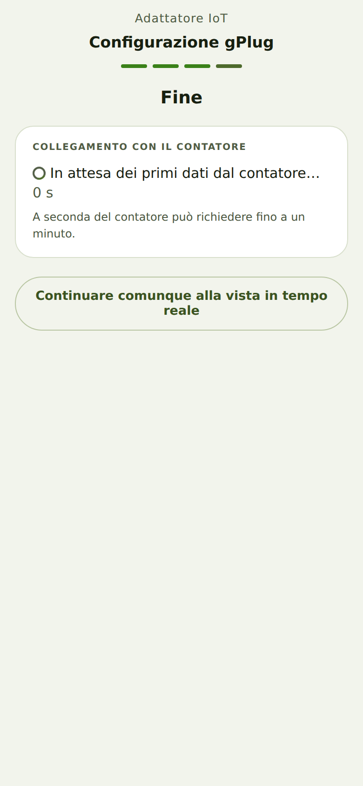

«In attesa dei primi dati» non scompare
Di cosa si tratta
Come proprietario di un gPlug voglio sapere quanto può durare la verifica, per non cambiare nulla troppo presto.
Come fare
- Dopo il salvataggio del profilo del contatore, Collegamento con il contatore mostra In attesa dei primi dati dal contatore… con un
contatore dei secondi.

La verifica è in attesa - Attendete fino a un minuto. Alcuni contatori inviano solo ogni 10–30 secondi.
Come capire che ha funzionato
- Al più tardi dopo un minuto appare Dati ricevuti oppure la scheda Verificare la configurazione con uno dei messaggi di questo capitolo.
Verificato con il simulatore del dispositivo il 30 settembre 2026.